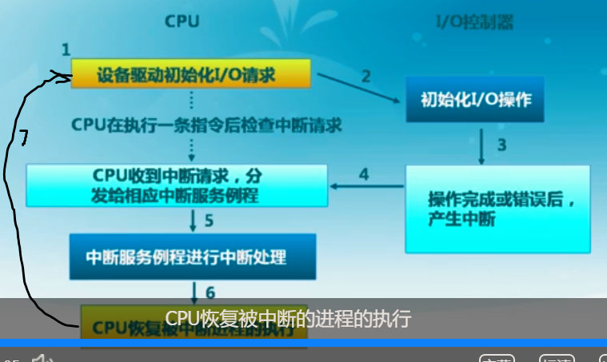

课程内容概述
- 常见设备I/O接口
- 进程的I/O方法
- CPU与设备之间的I/O方法
- 连接方法
- 传输方法
- 通知方法
- I/O请求生存周期
- 一类具体的I/O设备：磁盘
- 磁盘的工作机制和传输时间
- 磁盘调度算法
- 磁盘缓存
常见设备I/O接口
常见的接口分为三类。
| 设备接口类型 | 例子 | 访问特征 | I/O命令 |
|---|---|---|---|
| 字符设备 | 键盘、鼠标、串口 | 以字节为单位顺序访问 | 文件访问接口 |
| 块设备 | 磁盘驱动器、磁带驱动器、光驱 | 均匀的数据块访问 | 文件系统接口、内存映射 |
| 网络设备 | 以太网、无线、蓝牙 | 格式化报文交换 | 网络报文、网络协议 |
进程的I/O方法
从进程的角度来看，I/O方法分为三种类型。
| I/O类型 | 特点 | 读写方法 | 图示 |
|---|---|---|---|
| 阻塞I/O | Wait | 读写时，进程将进入等待状态，直到设备完成数据处理 | |
| 非阻塞I/O | Don’t Wait | 读写时立即从read或write系统调用返回，返回值为成功传输字节数；可能不成功 | |
| 异步I/O | Tell Me Later | 读写数据时，使用指针标记好用户缓冲区，立即返回；稍后内核将填充缓冲区/处理数据并通知用户 |
CPU与设备之间的I/O方法
内核通过I/O子系统控制各种硬件。
连接方法
一般来说，北桥芯片连接的是高速I/O设备，如内存和显卡；南桥芯片连接的是普通I/O设备，如磁盘和网络。
设备上的设备控制器是CPU和I/O设备间的接口，它向CPU提供特殊指令和寄存器，也就是CPU用来控制I/O设备的I/O地址，分为两种：
- I/O指令：通过I/O端口号访问设备寄存器
- 内存映射I/O：设备的寄存器/存储空间被映射到内存物理地址空间中，通过内存load/store指令完成I/O操作
传输方法
CPU与设备控制器之间的数据传输分为两种方式：
- 程序控制I/O（PIO，Programmed I/O）
- 通过CPU的in/out或者load/store传输所有数据（内存映射）
- 特点：
- 硬件简单，编程容易
- 消耗的CPU时间和数据量成正比
- 适用于简单的、小型的设备I/O
- 通过CPU的in/out或者load/store传输所有数据（内存映射）
- 直接内存访问（DMA）
- 设备控制器可直接访问系统总线
- 控制器直接与内存互相传输数据
- 特点：
- 设备传输数据不影响CPU
- 需要CPU参与设置（这是必然的）
- 适用于高吞吐量I/O
通过DMA读取磁盘数据的例子
具体步骤如下：
- 设备驱动收到读取磁盘数据到内存地址X的请求
- 设备驱动控制磁盘控制器从磁盘读取数据
- 磁盘控制器初始化DMA传送
- 磁盘控制器传送数据到DMA控制器
- DMA控制器传送C字节数据到内存地址X
- DMA控制器完成数据传送后，产生中断请求，通知CPU传送完成
通知方法
设备通知CPU（I/O操作完成时间、I/O操作是否发生错误、设备状态等）主要分为两种方式：
- CPU主动轮询
- 设备中断
轮询
处理流程：
- I/O设备在特定的状态寄存器中放置状态和错误信息
- 操作系统定期检测状态寄存器
特点：
- 简单
- I/O操作频繁或不可预测时，开销大和延时长
设备中断
处理流程：
- CPU在I/O之前设置任务参数
- CPU在发出I/O请求后，继续执行其他任务
- I/O设备处理I/O请求
- I/O设备处理完成时，触发CPU中断请求
- CPU接收中断，分发到相应中断处理例程

特点：
- 处理不可预测事件效果好（CPU在每两条指令中间处理一次中断请求）
- 开销相对较高
I/O请求生存周期
显然，这是异步I/O请求。
一类具体的I/O设备：磁盘
磁盘的工作机制和传输时间
磁盘的主要组成部分包括：
- 磁盘轴
- 若干个盘片（围绕磁盘轴旋转）
- 磁道
- 扇区
- 磁头（上面有读写头）
在读取或写入时，磁头必须被定位在期望的磁道，并从所期望的柱面和扇区开始读写。在这一过程中，花时间最长的是磁头的移动。我们称寻道时间为定位到期望的磁道所花费的时间，旋转延迟为从0扇区开始处到达目的地花费的时间。一般来说，平均旋转延迟时间 是磁盘旋转一周时间的一半。
磁盘I/O传输一般分为以下5个步骤：
- 等待设备可用
- 等待通道（PIO或DMA通道）可用
- 寻道
- 旋转延迟
- 数据传输
后四个步骤被称为“设备忙”状态，所占用的时间一般认为是传输时间，公式为
公式各个部分的含义：
- ：传输时间
- ：寻道时间（和磁头移动距离有关，花费的时间最多）
- ：旋转延迟（=旋转一周的时间）
- ：传输时间
- ：传输的比特数
- ：磁道上的比特数
- ：磁盘转速
显然，最需要优化的是寻道时间。磁盘调度算法解决的就是这一问题。
磁盘调度算法
磁盘调度算法的目的：通过优化磁盘访问请求顺序来提高磁盘访问性能
进行磁盘调度的原因：
- 寻道时间是磁盘访问最耗时的部分
- 同时会有多个在同一磁盘上的I/O请求（所以可以调整顺序）
- 随机处理磁盘访问请求的性能表现很差
下列算法中使用的例子：
- 磁盘访问序列：
98, 183, 37, 122, 14, 124, 65, 67 - 初始磁头位置：
53
| 算法名称 | 做法 | 特征 | 例子 | 移动距离 |
|---|---|---|---|---|
| 先进先出（FIFO）算法 | 按顺序处理请求 | 能够保证公平；性能较差 | 53->98->183->37->122->14->124->65->67 |
640 |
| 最短服务时间优先（SSTF）算法 | 选择从磁臂当前位置需要移动最少的I/O请求 | 很不公平 | 53->65->67->14->98->122->124->183 |
236 |
| 扫描（SCAN）算法 | 磁臂在一个方向上移动，访问所有未完成的请求，直到磁臂到达该方向上最后的磁道；然后调换方向 | 判断简单；不公平，偏好中间位置磁道 | 53->37->14->0->65->67->98->122->124->183->199 |
236 |
| 循环扫描（C-SCAN）算法 | 对SCAN算法的改进：限制仅在一个方向上扫描；当最后一个磁道也被访问过了后，磁臂返回到磁盘的另外一端再次进行 | 比SCAN算法更公平 | 53->37->14->0->199->183->124->122->98->67->65 |
386 |
| C-LOOK算法 | 对C-SCAN算法的改进：不走到磁盘的头，而是只走到最远的请求 | 同样能保证公平性 | 53->37->14->183->124->122->98->67->65 |
326 |
| N步扫描（N-step-SCAN）算法 | 将磁盘请求队列分成长度为N的子队列，按FIFO算法依次处理所有子队列；再用扫描算法处理每个队列 | 防止磁头粘着现象 | 53->37->183->98->14->124->122->67->65 |
500 |
| 双队列扫描（FSCAN）算法 | 将磁盘请求队列分成两个子队列，交替使用扫描算法处理每一个队列；处理一个队列时，所有新生成的磁盘I/O请求都被放入另一队列中 | 比N步扫描更简单 | 53->37->183->122->98->67->65->14->124 |
441 |
一些细节：
- 认为SCAN、C-SCAN、C-LOOK和N步扫描算法都是先向低编号移动
- N步扫描算法的N为3，使用的是C-LOOK扫描方法
- FSCAN算法中假设后四个请求位于下一个队列，使用的也是C-LOOK扫描算法
- 课件上没有指出C-SCAN算法返回时到底是返回到另外一端还是“另外一端最靠边的请求”。鉴于有C-LOOK的改进，我就认为C-SCAN傻得直接走到另一端了。类似地，我也认为C-LOOK算法反转时只会走到另一端最远的请求，而不是另一端。
磁盘缓存
缓存是数据传输双方访问速度差异较大时，引入的速度匹配中间层。磁盘缓存 是磁盘扇区在内存中的缓冲区。磁盘缓存的调度算法很类似虚拟存储调度算法（不过倒了过来，虚拟存储是把内存缓存到磁盘，磁盘缓存是把磁盘缓存到内存==）。
单缓存与双缓存
根据缓冲区个数分类：
- 单缓存（Single Buffer Cache）：I/O设备写入时，CPU不能进行读操作（类似生产者-消费者问题）
- 双缓存（Double Buffer Cache）：有两个缓冲区，可以同时分别读写；结束之后可以交换
访问频率置换（Frequency-based Replacement）算法
问题：在一段密集磁盘访问后，LFU算法的引用计数变化无法反映当前的引用情况
算法思路：
- 考虑磁盘访问的密集特征，对密集引用不计数
- 在短周期中使用LRU算法，而在长周期中使用LFU算法
算法具体步骤：
- 把LRU算法中的特殊栈分成3部分，并为每个缓存块增加一个引用计数
- 新区域（New Section）：栈顶
- 中间区域（Middle Section）
- 旧区域（Old Section）：栈底
- 每次访问时：
- 栈中被访问的缓存块移到栈顶（这个是LRU的原始要求）；如果该块原来在新区域，引用计数不变（这个是符合LRU的）；否则引用计数+1
- 在新区域中引用计数不变的目的是避免密集访问对引用计数产生不利影响
- 在中间区域和旧区域中引用计数+1是为了使用LFU算法
- 未缓存数据块读入后放在栈顶，引用计数为1
- 在旧区域中引用计数最小的缓存块被置换（这是LFU的要求；但并不会在整个栈里找计数最小的）
- 中间区域的定义是为了避免新读入的缓存块在第一次离开新区域时马上被置换，有一个过渡期
- 栈中被访问的缓存块移到栈顶（这个是LRU的原始要求）；如果该块原来在新区域，引用计数不变（这个是符合LRU的）；否则引用计数+1
例子：懒得想了，不写了
练习
来自lec23 IO设备 在线练习和IO设备(lec 23) spoc 思考题。
选择填空题
字符设备包括（）
- 键盘
- 鼠标
- 并口
- 串口
都是。因为它们的访问特征都是以字节为单位顺序访问。
块设备包括（）
- 硬盘
- 软盘
- 光盘
- U盘
都是。因为它们的访问特征都是均匀的数据块访问。
网络设备包括（）
- 以太网卡
- wifi网卡
- 蓝牙设备
- 网盘设备
网络设备的访问特征是格式化报文交换。而网盘在模拟实现上应该算块设备。
关于CPU与设备的通信方式包括（）
- 轮询
- 设备中断
- DMA
- PIPE
PIPE是用于进程间通信的。虽然DMA听起来是直接把数据写入到内存，不过还是需要CPU参与设置的。
关于IO数据传输的阐述正确的是（）
- 程序控制I/O(PIO, Programmed I/O)通过CPU的in/out或者load/store传输所有数据
- DMA设备控制器可直接访问系统总线并直接与内存互相传输数据
- DMA机制适合字符设备
- PIO机制适合块设备
DMA机制适合块设备，PIO机制适合简单，低速的字符设备等。最后两个选项反了。
常用移臂调度算法包括（）
- 先来先服务（FIFO）算法
- 最短寻道时间优先（SSTF）算法
- 电梯调度（SCAN）算法
- 单向扫描（C-SCAN）算法
都对。除此之外还有CLOOK和N-step-SCAN算法。
在设备管理子系统中，引入缓冲区的目的主要有()
- 缓和CPU与I/O设备间速度不匹配的矛盾
- 减少对CPU的中断频率，放宽对CPU中断响应时间的限制
- 解决基本数据单元大小（即数据粒度）不匹配的问题
- 提高CPU和I/O设备之间的并行性
都对。
简答题
字符设备的特点是什么？
以字节为单位顺序访问。
块设备的特点是什么？
以均匀的数据块为单位随机访问。
网络设备的特点是什么？
以格式化报文为单位的复杂交互访问。
阻塞I/O、非阻塞I/O和异步I/O这三种I/O方式有什么区别？
- 阻塞I/O：数据读写操作后，进程将进入等待状态，直到完成操作时返回；
- 非阻塞I/O：数据读写操作后，进程将立即返回；
- 异步I/O：数据读写操作后，进程将立即返回；内核在完成操作时通知进程；
区别：
- 进程发出操作命令后，进程是否等待；
- 操作结果反馈方式
请描述I/O请求到完成的整个执行过程。
CPU通过总线与设备相连；CPU通过主动的I/O端口和映射内存读写操作与设备进行信息交互；设备通过中断请求来响应CPU的操作；在CPU的控制下，DMA可直接在设备接口与内存间的数据传输。
- 进程通过系统调用发送对设备的抽象操作命令
- 内核把抽象的设备操作命令转换成具体的设备I/O端口和映射内存读写序列，并在设备驱动中实施读写操作
- 当这个读写序列较长时，CPU会控制DMA进行内存与设备接口的直接数据传送
- 设备在收到控制序列后，执行操作动作，并在完成时向CPU发出中断请求
- CPU通过中断服务例程响应设备的中断请求，并进行后续处理，直到系统调用返回，从而完成整个I/O操作过程。
IO数据传输有哪几种？
- 程序控制I/O：
- CPU通过显式的IO指令，如x86的in, out等传输数据
- memory读写方式，即把device的寄存器，内存等映射到物理内存中
- 直接内存访问（DMA）：在CPU的控制下，DMA控制器直接在内存与设备接口间传输数据
轮询方式的特点是什么？
- 简单
- I/O操作频繁或不可预测时，开销大和延时长
中断方式的特点是什么？
- 处理不可预测事件效果好
- 开销相对较高
DMA方式的特点是什么？
- 直接在内存与设备接口间进行数据传输
- 适合高速和简单的数据传输
- CPU的开销小
请简要阐述磁盘的工作过程。
- 磁头移动到期望的磁道
- 盘片旋转定位到期望的柱面和扇区
- 开始读写
请描述磁盘I/O操作时间组成。
磁盘I/O操作一般分成五个步骤：
- 等待设备可用
- 等待通道（PIO或DMA通道）可用
- 寻道
- 旋转延迟
- 数据传输
其中后四个步骤被称为“设备忙”状态，一般认为是传输时间，公式为：
请说明磁盘调度算法的评价指标。
- 总的I/O时间开销（显然）
- 公平性
- 平均等待时间（似乎这对磁盘调度不是很重要）
请描述FIFO、SSTF、SCAN、CSCAN、LOOK、C-LOOK、N-step-SCAN和FSCAN等磁盘调度算法的工作原理。
磁盘调度算法就是优化磁盘数据块的访问顺序。
- 先进先出（FIFO）算法：按请求顺序访问
- 最短寻道时间优先（SSTF）算法：从当前位置找当前最近的访问数据块位置
- 扫描（SCAN）算法：保持磁头移动方向到最远处，并顺序访问需要访问的数据块
- 循环扫描（C-SCAN）算法：只在一个方向上移动时访问数据的SCAN算法
- LOOK算法：保持磁头移动方向到已有的最后一个请求，并顺序访问需要访问的数据块
- C-LOOK算法：只在一个方向上移动时访问数据的LOOK算法；
- N步扫描（N-step-SCAN）算法：
- 将磁盘请求队列分成长度为N的子队列
- 按FIFO算法依次处理所有子队列
- 按扫描算法处理每个队列
- 双队列扫描（FSCAN）算法：
- 把磁盘I/O请求分成两个队列，交替使用扫描算法处理一个队列
- 新生成的磁盘I/O请求放入另一队列中
磁盘缓存的作用是什么？
磁盘缓存是磁盘扇区在内存中的缓存区。作用是通过缓存访问，减少磁盘访问。
请描述单缓存(Single Buffer Cache)的工作原理。
只有一个缓存区，用户进程和I/O设备只能交替访问缓存区。
请描述双缓存(Double Buffer Cache)的工作原理。
设置两个缓存区，任何时刻用户进程和I/O设备可同时访问不同的缓存区。
请描述访问频率置换算法(Frequency-based Replacement)的基本原理。
思路：
- 考虑磁盘访问的密集特征，对密集引用不计数
- 短周期内采用LRU，长周期内采用LFU
做法：
- 把栈分成三个区域：新区域（栈顶）、中间区域、旧区域（栈底）
- 新区域中数据块的引用，不计数
- 中间区域和旧区域中数据块的引用，引用计数加
- 淘汰只在旧区域中找引用计数最小的数据块
实践题
请以键盘输入、到标准输出设备stdout的printf输出、串口输出、磁盘文件复制为例，描述ucore操作系统I/O从请求到完成的整个执行过程，并分析I/O过程的时间开销。
没做，现在还没做完lab8，感觉实在过于麻烦了。
完成磁盘访问与磁盘寻道算法的作业，然后实现CSCAN、LOOK、C-LOOK、FSCAN等磁盘调度算法中的一个。具体帮助和要求信息请看Chapter 37: Hard Disk Drives、disksim指导信息和disksim参考代码
看起来不难，但现在做起来意义不大，所以不做了。